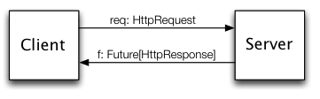
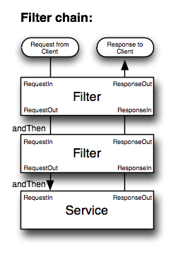
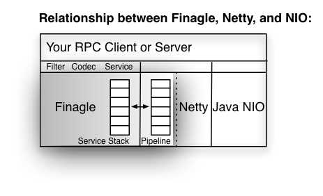

By Mairbek Khadikov / @mairbek
Is just a function
trait Service[Req, Res] = Req => Rep

Something that implements Service
Something that uses Service
Most of the time application waits for I/O operation to be completed
Use resources to do the job instead of waiting for I/O
interface UserService {
User getUser(String email);
}
Don't call us, we'll call you!
interface UserCallback {
void onComplete(User user);
void onFailure(Throwable error);
}
interface UserService {
void getUser(String email, UserCallback callback);
}
Try to implement sequence of asynchronous calls
Try to combine result of concurrent asynchronous calls
Languages are simply designed for serial execution
trait Service[Req, Res] = Req => Future[Rep]
Represents a computation that has not yet completed, which can either succeed or fail
Usually computed concurrently
trait Future[A]
// Get value. Blocks until completed
val f : Future[A]
println(f())
// Get value with timeout
val f : Future[A]
println(f(1.second))
// Can throw exception
f.get() match {
case Return(res) => ...
case Throw(exc) => ...
}
// Good old callback
val f: Future[String]
f onSuccess { s =>
log.info(s)
} onFailure { e =>
log.error(e)
}
Fancy control-flow
def map[B](f: A => B): Future[B]
def map[B](f: A => B): Future[B]
val f : Future[List[User]]
val fcount = f.map(_.size)
println(fcount())
val fUser : Future[UserData] = getUserData(token)
val fFriends = fUser.map(user => getFriends(user))
println(fFriends()) // Future[Future[List[User]]]
def flatMap[B](f: A => Future[B]): Future[B]
val f = userIdGenerator.generateId flatMap {id =>
facebookClient.getUserData(token) flatMap {userData=>
userRepository.addUser(id, userData) flatMap {_=>
notificationService.sendEmail(userData.email).map(_=>id)
}
}
}
println(f.get)
val f = for {
id <- userIdGenerator.generateId
userData <- facebookClient.getUserData(token)
_ <- userRepository.addUser(id, userData)
_ <- notificationService.sendEmail(userData.email)
} yield (id)
println(f.get)
def collect[A](fs: Seq[Future[A]]): Future[Seq[A]]
def join(fs: Seq[Future[_]]): Future[Unit]
def select(fs: Seq[Future[A]]) : Future[(Try[A], Seq[Future[A]])]
Writable future
val p = new Promise[String]
p.setValue("Hello")
p.setException(new RuntimeException)

(ReqIn, Service[ReqOut, RepIn]) => Future[RepOut]
val authRequred: Filter[Req, Rep, Req, Rep]
val service: Service[Req, Rep]
val secureService = authRequred andThen service

object SimpleHttp extends Service[HttpRequest, HttpResponse] {
def apply(request: HttpRequest) = {
val response = new DefaultHttpResponse(HTTP_1_1, OK)
response.setContent(copiedBuffer("Hello #devtime", UTF_8))
Future.value(response)
}
}
val server = ServerBuilder()
.codec(Http)
.bindTo(new InetSocketAddress(8080))
.build(SimpleHttp)
val client = ClientBuilder()
.codec(Http())
.hosts(new InetSocketAddress(8080))
.hostConnectionLimit(1)
.build()
val request = new DefaultHttpRequest(HTTP_1_1, Get, "/")
val response = client(request)
val serviceAddress = new InetSocketAddress(...)
val server = ServerBuilder()
.bindTo(serviceAddress)
.build()
cluster.join(serviceAddress)
val client = ClientBuilder()
.cluster(cluster)
.hostConnectionLimit(1)
.codec(new StringCodec)
.build()
trait Spool[+A] {
def head: A
def tail: Future[Spool[A]]
def foreach[B](f: A => B)
}
trait Broker[T] {
def send(msg: T): Offer[Unit]
val recv: Offer[T]
}
trait Offer[T] {
def sync(): Future[T]
}
val b: Broker[String]
val sendOf = b.send("Hello")
val recvOf = b.recv
// Sender process
sendOf.sync()
// Receiver process
recvOf.sync()
val q0 = new Broker[Int]
val q1 = new Broker[Int]
val q2 = new Broker[Int]
val anyq: Offer[Int] = Offer.choose(q0.recv, q1.recv, q2.recv)
Sintara like web framework running on top of finagle
Define controller
class ExampleApp extends Controller {
get("/") { request =>
render.plain("hello world").toFuture
}
get("/user/:username") { request =>
val username = request.routeParams.getOrElse("username", "default_user")
render.plain("hello " + username).toFuture
}
}
Start the server
val app = new ExampleApp
def main(args: Array[String]) = {
FinatraServer.register(app)
FinatraServer.start()
}